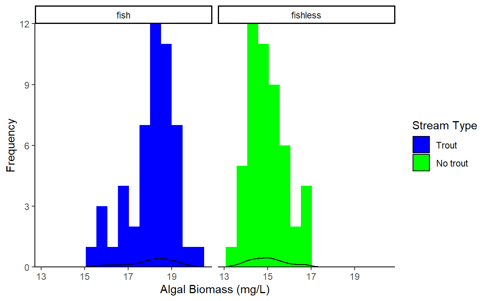

Review of t-tests and ANOVAs in a stream ecology context.
Here we will learn some stats. Yay!
What we will cover:
Imagine we are hiking through the Sierras and we notice that some streams have a lot of algae, while other streams do not. We think that the presence of algae might be linked to trout in some way…so we ask the following question:
Does algal biomass differ in Sierra Nevada streams with invasive trout and without invasive trout?
As curious scientists, we decide to do a proper scientific experiment. We choose fifty streams with fish, and fifty streams without fish, and we measure the algae levels in all of the streams. Here are the data from the first five streams of each type:
head(algae[algae$stream_type == 'fish',], 5)head(algae[algae$stream_type == 'fishless',], 5)Looking at our data, it seems like there might be more algae in streams with fish. But how can we determine whether this is a real pattern, or something that’s due to random chance?
This is where statistics are useful! Statistics can tell us how likely it is that our results were just due to random chance, instead of representing an actual pattern in the data.
What does random chance mean?
There are several types of statistics that are widely used…we’re going to be using hypothesis testing methods in this class.
Hypothesis testing involves the following procedure:
Let’s try it, using our algae data!
Write your hypothesis as an if/then statement here:
And write a reason for your hypothesis here:
We already did this! But let’s think about the data we collected.
head(algae[algae$stream_type == 'fish',], 5)head(algae[algae$stream_type == 'fishless',], 5)Types of data
Predictor/independent variable (factor) Fish (two levels: Fish and Fishless)
Response/dependent variable Algal biomass
Additional variables
These are special statistical hypotheses…they’re sort of like two sides of the hypothesis coin.
H0 : The hypothesis of no difference
HA : The hypothesis of difference
Randomly chosen Replicated
What kind of data do I have (categorical, binary, continuous)?
Do I want to know about the mean, median, or variance of my data?
Does my data follow a normal distribution?
algae_anova <- aov(algal_biomass ~ stream_type, data = algae)
summary(algae_anova)## Df Sum Sq Mean Sq F value Pr(>F)
## stream_type 2 305.3 152.63 150.7 <2e-16 ***
## Residuals 147 148.9 1.01
## ---
## Signif. codes: 0 '***' 0.001 '**' 0.01 '*' 0.05 '.' 0.1 ' ' 1TukeyHSD(algae_anova)## Tukey multiple comparisons of means
## 95% family-wise confidence level
##
## Fit: aov(formula = algal_biomass ~ stream_type, data = algae)
##
## $stream_type
## diff lwr upr p adj
## fish-declining 2.9384126 2.4618243 3.415001 0.0000000
## fishless-declining -0.1684854 -0.6450738 0.308103 0.6806566
## fishless-fish -3.1068980 -3.5834864 -2.630310 0.0000000# Calculate mean evenness for each treatment
algae %>%
group_by(stream_type) %>%
summarise(
mean = mean(algal_biomass),
sd = sd(algal_biomass)
)# Explore the data distribution
algae <- filter(algae, stream_type != 'declining')
ggplot(algae, aes(x = algal_biomass,
fill = stream_type)) +
geom_histogram(bins = 15) +
geom_density(alpha = 0.5) +
scale_fill_manual(name = 'Stream Type',
values = c('blue','green'),
labels = c('Trout','No trout')) +
scale_y_continuous(expand = c(0,0)) +
theme_classic() +
facet_wrap(~stream_type) +
labs(x = "Algal Biomass (mg/L)",
y ="Frequency")
t.test(algae$algal_biomass~algae$stream_type)##
## Welch Two Sample t-test
##
## data: algae$algal_biomass by algae$stream_type
## t = 16.181, df = 93.14, p-value < 2.2e-16
## alternative hypothesis: true difference in means is not equal to 0
## 95 percent confidence interval:
## 2.725609 3.488187
## sample estimates:
## mean in group fish mean in group fishless
## 18.09479 14.98789